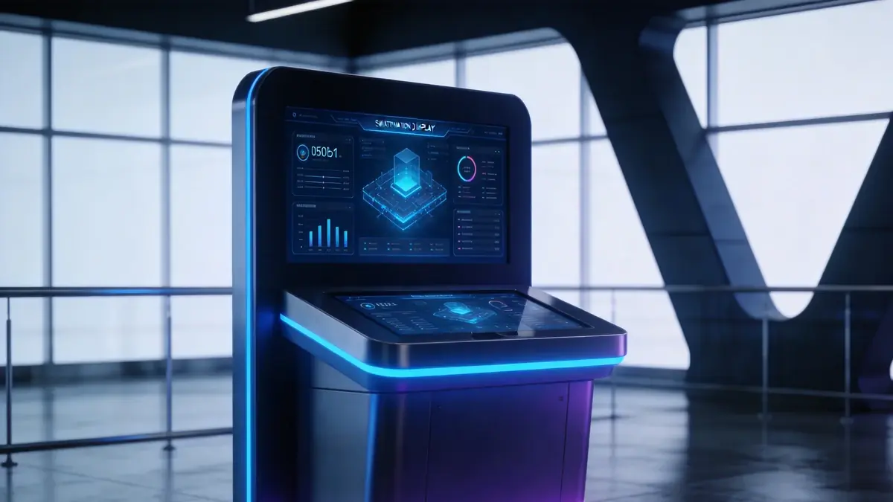
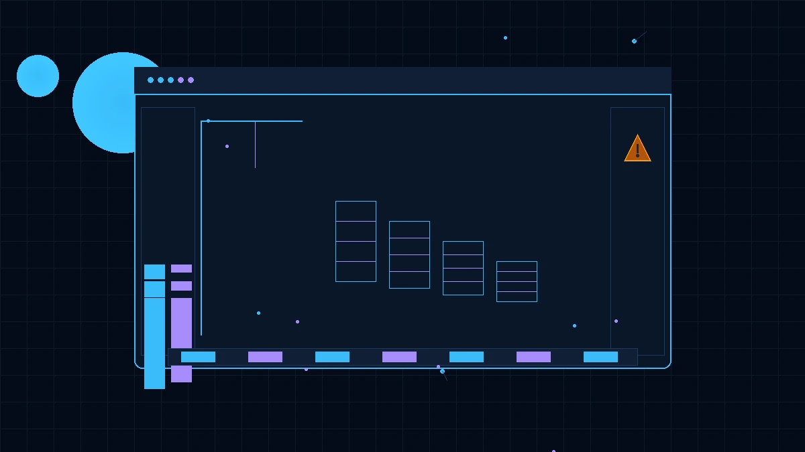
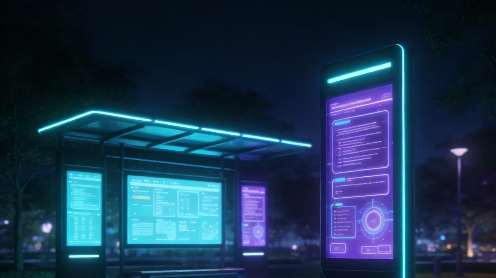
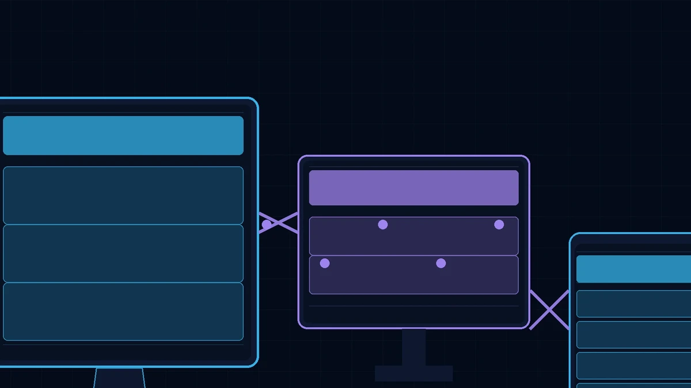

Le système d'affichage d'informations aide les entreprises à publier et consulter facilement les avis internes, politiques, annonces de projet et autres informations.
Fonctions Clés
Publication
Prise en charge de l'édition de texte enrichi, du téléchargement de pièces jointes, de la publication planifiée, de l'épinglage et des étiquettes de catégorie.
Gestion des Annonces
Gestion complète du cycle de vie des annonces : rédaction, approbation, publication et retrait, avec historique des versions.
Colonnes Multi-Niveaux
Prise en charge de la structure de colonnes personnalisée, adaptée aux changements d'organisation et de périmètre d'activité.
Recherche
Recherche plein texte, filtres avancés, localisation rapide par date, catégorie ou mot-clé.
Statistiques de Lecture
Enregistrement du nombre de lecteurs et de la durée de lecture, avec rappel automatique pour les non-lecteurs.
Affichage Multi-Terminal
Synchronisation sur PC, application mobile, écrans de hall et écrans tactiles.
Scénarios d'Application

Système d'Affichage d'Informations
Le système d'affichage d'informations aide les entreprises à publier et consulter facilement les avis internes, politiques, annonces de projet et autres informations.

Affichage sur Chantier
Affichage sur site de l'aperçu du projet, de l'avancement des travaux, des annonces de sécurité et des informations du personnel.

Annonces de Parc
Publication unifiée sur les grands écrans du parc des avis de gestion, annonces d'événements et informations de location.

Publication Multi-Écran
Mise à jour synchronisée du contenu sur portail PC, application mobile, écrans de hall et écrans tactiles.
Avantages du Système
Le système prend en charge l'intégration avec les outils IM tels que WeChat Work, DingTalk et Lark, pour une diffusion instantanée des informations. Il prend également en charge les scénarios de divulgation gouvernementale, répondant aux exigences de conformité de l'ouverture de l'information gouvernementale.